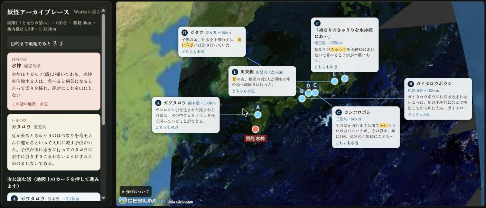

A game played on the Database of Folktales of Mysterious Phenomena and Yōkai: move from one tale to a similar tale until you reach a target tale. The 31,898 tales that remain after merging duplicates are each linked to the tales closest to them in content, and the game is played on that network. Every move offers six cards, with the words shared with the current tale marked in the text. A route that follows similarity, such as from a Gatarō tale in Shiga to a water-deity tale in Kagoshima, often jumps unexpectedly far on the map.
In later levels the route must pass through given prefectures, and the distance travelled is counted. After arriving, the player compares their own route with the shortest route and the guide's route on the map. Instead of typing a query, the player walks through the archive by reading and choosing.
The edition published on this site holds 15 puzzles and the 2,893 tales around their routes. It runs in the browser with no server, and nothing the player does is sent anywhere. The game text is in Japanese.